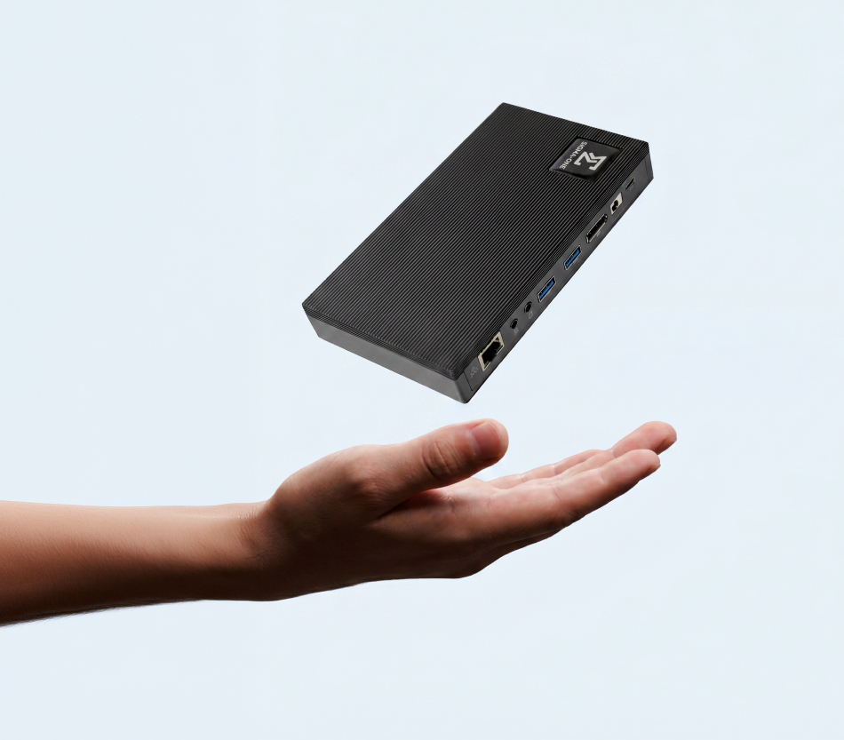

Wireless Portfolio / Measurement
Sigma-One
Sigma-One captures modem diagnostic data from supported commercial handsets, IoT devices and connected-vehicle units. It supports monitoring-data upload to Centra-SD and detailed log retention within the selected deployment.

Overview
Extend diagnostic measurement to supported devices and remote installations. The device under test must expose a compatible diagnostic interface. Power, connectivity, physical integration, remote tests and the analysis workflow are specified for the deployment.
Device Types
Sigma-One captures supported modem communication through a compatible diagnostic interface. The physical connection and capture configuration are selected for the device under test.
Capture supported modem diagnostic data where the handset, firmware and diagnostic interface provide the required access.
Investigate modem behaviour on supported modules, routers and connected equipment using the specified diagnostic interface.
Capture supported telematics modem data through the vehicle integration specified for the project.
Automation
Remote test configurations are selected for the device, installation and campaign. Discuss the required test operations, connectivity and execution arrangements with our team.
Sigma-One supports modem diagnostic capture from compatible handsets, IoT devices and telematics units, with the monitoring and remote configuration specified for each deployment.
Three deployment scenarios where a capture unit beside the device under test is the practical option.
Investigate supported TCU modem behaviour in driving conditions using the vehicle integration agreed for the project.
Capture supported modem diagnostics from IoT modules and connected devices to investigate communication behaviour.
Define the device interface, power, connectivity and retrieval workflow for stationary or remote measurement.